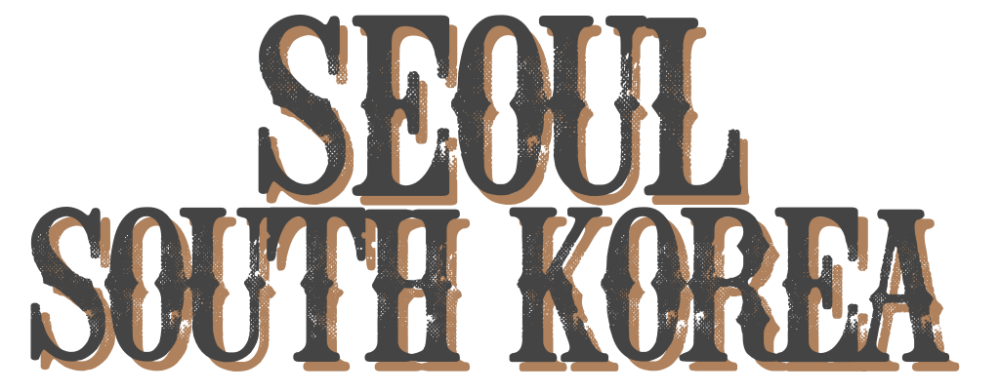

I.Seoul.U
Seoul, one of the place that is a must visit not only in Korea, but also in Asia. It became one of the famous tourist spots to go after the South Korea Exonomy Boom. This allows Koreans to manifest their city into people world wide.
A fascinating blend of ancient traditions and cutting-edge digital technology, home to endless street food vendors and vast nightlife districts, an extraordinarily high-pressure educational system and serene Buddhist temples, a trend-setting youth culture and often crushing conformism, extraordinary architecture and endless monotonous rows of grey apartment buildings, Seoul is a city filled with stark contrasts.
Are you planning to travel here? We've got you covered. Here are the must-visit places in Seoul:
Gyeongbokgung Palace
Remarkably, the most representative edifices of the Joseon Dynasty, Gyeonghoeru Pavilion and Hyangwonjeong Pond have remained relatively intact. Woldae and the sculptures of Geunjeongjeon (The Royal Audience Chamber) represent past sculptures of contemporary art.
Visitors to Gyeongbokgung can also visit the National Palace Museum of Korea and the National Folk Museum of Korea as they are located on the palace grounds.
Also, to increase ease of accessibility from Gyeongbokgung Palace to Seochon and vice versa, the palace's western gate, Yeongchumun, was opened to the public on December 2018. For the past 43 years, there were only 3 entrances to Gyeongbokgung Palace - the southern gate Gwanghwamun, the northern gate Sinmumun, and the eastern entrance of National folk Museum of Korea. However, with the opening of the western gate Yeongchumun, entry to the palace from all directions has been now made possible.
Myeong-dong
Myeong-dong is Seoul’s shopping mecca and is a must-see for tourists, but it is not just a shopping destination. Myeong-dong is also a hub of commerce, banking and culture with a daytime population of 1.5-2 million. For shoppers there is a mixture of street stalls and retail outlets selling everything from high fashion to casual attire, as well as many Korean cosmetics stores offering high-quality products at competitive prices.
Myeong-dong is very popular with international visitors and fills with Japanese and Chinese tourists during the holiday period known as “Golden Week” which takes place in spring and is called golden week due to the week-long holiday period that takes place in Japan and China. Part of Myeong-dong’s popularity stems from relatively affordable prices here, especially compared to the other shopping meccas of Apgujeong-dong and Cheongdam-dong.
Bukchon Hanok Village
Bukchon Hanok Village not only represents Seoul, but the entire country of Korea. There's a reason for why this area has become so popular amongst foreigners; there's no other area that quite shows the spirit of the Korean people and the ways of the past.
Bukchon was not only the center of Hanyang (old Seoul), but it is an excellent location geographically. It follows the Korean rules of feng shui, where the mountains loom in the back while the river flows in the front.